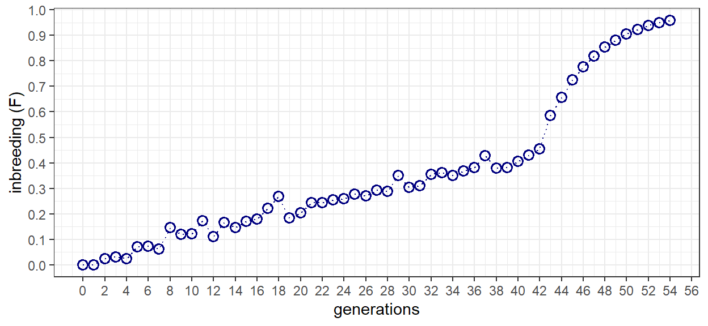

Chapter 6 Development of the base population
To start the simulation a base population needs to be developed. Of all the simulations performed in the manual, this one probably has the least important base population. the reason being that all downstream calculations are based on the pedigree itself, rather than anything related to gene frequencies. As such, a single chromosome with 10 segregation sites produced using quickhaplo will produce the same results as an in silico copy of the mouse genome with ten thousand generations of burn-in. Example 5.2 specifies 42 generations of breeding at an effective population size of 40 (NB: from A-to-B), followed by a further 11 generations of full-sib mating (NB: from B-to-X).
Any number of mating schemes could be used to go from A-to-B but the minimal inbreeding strategy common to laboratory animal, and describe in Chapter 4, is the easiest to envision. For minimal inbreeding N_e = 2N-1. As such, a base population with 20 individuals provides an N_e of just about 40. Sexes are specified to make the simulation easily compatible with the kinship2 package. The following code develops base population A.
n_pop <- 20
pop_haps <- quickHaplo(nInd = n_pop,
nChr = 1,
segSites = 10,
genLen = 1,
ploidy = 2L,
inbred = FALSE)
SP = SimParam$new(pop_haps)
SP$setSexes("yes_sys")
pop_0 <- newPop(rawPop = pop_haps,
simParam = SP)6.1 Breed from A-to-B & from B-to-X
Prior to breeding, a vector list was developed to hold the populations created by a for loop and the base population stored. The first loop employs the randCross function to perform 10 crosses each producing 2 progeny. In this way, the individuals of each generation are replaced by their offspring and an N_e of near 40 is maintained.
Full-sib mating commences at generation 42. The function makeCross is used to perform the full-sib mating according to the previously defined cross plan. In this case, the cross plan takes advantage of the sequential and predictable enumeration of individuals in AlphaSimR. For each generation, individual IDs are used to fill a 2-column matrix row-wise. In this way, the matrix is composed of rows of brother-sister combinations. We only need to switch the column order to sister-brother to conform with the cross plan structure. With the logical organization of AlphaSimR, repeating the cross plan over a series of generations results in 10 separate full-sib lines.
POP <- vector(length = 55, mode = "list")
POP[[1]] <- pop_0
for(i in 2:43){
POP[[i]] <- randCross(pop = POP[[i - 1]],
nCrosses = 10,
nProgeny = 2,
simParam = SP)
}
for(i in 44:55){
cp <- matrix(data = POP[[i-1]]@id,
ncol = 2,
byrow = TRUE)
cp <- cbind(cp[,2], cp[,1])
POP[[i]] <- makeCross(pop = POP[[i-1]],
crossPlan = cp,
nProgeny = 2,
simParam = SP)
}6.2 Get the complete A-to-X pedigree
A function was first developed to pull and format the pedigree as a data frame from a single population. The do.call and lapply functions were then used to pull and combine the pedigrees from all populations. The first and last 5 entries in the pedigree are shown for interest. Note that both sex and generation (t) were added to the pedigree. While sex permits easy integration with kinship2, generation facilitates data wrangling and presentation later on.
full_ped <- function(gen){
getPed(POP[[gen]]) %>%
mutate(t = gen-1) %>%
mutate(sex = POP[[gen]]@sex) %>%
mutate(id = as.numeric(id),
sire = as.numeric(father),
dam = as.numeric(mother)) %>%
select(t, id, sire, dam, sex)
}
ped_df <- do.call(rbind, lapply(1:55, FUN = full_ped))t | id | sire | dam | sex |
|---|---|---|---|---|
0 | 1 | 0 | 0 | M |
0 | 2 | 0 | 0 | F |
0 | 3 | 0 | 0 | M |
0 | 4 | 0 | 0 | F |
0 | 5 | 0 | 0 | M |
54 | 1,096 | 1,075 | 1,076 | F |
54 | 1,097 | 1,077 | 1,078 | M |
54 | 1,098 | 1,077 | 1,078 | F |
54 | 1,099 | 1,079 | 1,080 | M |
54 | 1,100 | 1,079 | 1,080 | F |
6.3 Calculate inbreeding for A-to-B & B-to-X
For the purpose of the exercise, we will first examine the pedigrees separately from A-to-B and B-to-X. The following code simply filters the pedigree to generations less than 42 before formatting using the pedigree function from kinship2. With the pedigree formatted, the kinship function is applied, the resulting matrix converted to a long-format data frame, merging with the original pedigree file, and calculating the mean coefficient of inbreeding (F) for each generation. For more details on this process, revisit the preceding exercise comparing recurrence equations and coancestry.
Because this is a simulation, variance exists in the calculated inbreeding from generation-to-generation. To compensate for this variation, a linear model in the form of F = b + mt is fit to the data. A plot of inbreeding as a function of time is then produced so the results can be examined. After 42 generations, inbreeding reaches a level of just over 0.4. This equates well to the theoretical value of 0.410 reported in the example problem.
ped_AB <- ped_df %>%
filter(t < 43)
ped_ks <- pedigree(id = ped_AB$id,
dadid = ped_AB$sire,
momid = ped_AB$dam,
sex = ped_AB$sex,
missid = 0)
df_AB <- data.frame(kinship(ped_ks)) %>%
set_names(., nm = ped_ks$id) %>%
mutate(sire = 1:length(ped_ks$id)) %>%
gather(key = "dam", value = "f", - c(sire)) %>%
mutate(sire = as.numeric(sire),
dam = as.numeric(dam)) %>%
right_join(., ped_AB, by = c("sire", "dam")) %>%
select(t, id, sire, dam, f) %>%
arrange(id) %>%
group_by(t) %>%
summarize(Ft = mean(f)) %>%
mutate(Ft = ifelse(is.na(Ft) == TRUE, 0, Ft))
mod_AB <- lm(Ft~t, data = df_AB)
df_AB %>%
ggplot() +
geom_line(aes(x = t, y = Ft),
color = "navy", linetype = "dotted", linewidth = 0.5) +
geom_point(aes(x = t, y = Ft),
color = "navy", shape = 1, size = 2.5, stroke = 1) +
geom_line(aes(x = t, y = predict(mod_AB)),
color = "black", linewidth = 0.75) +
scale_x_continuous(breaks = seq(0, 60, by = 2)) +
scale_y_continuous(breaks = seq(0, 1, by = 0.1)) +
xlab("generations") +
ylab("inbreeding (F)") +
theme_bw()The same basic processes are applied to generations 42 to 54 that represent the progression from B-to-X. The only difference between the scripts are a few lines of code to revert the filtered pedigree IDs to start from 1. After 11 generations of full-sib mating, inbreeding reaches a level equal to 0.908. This is equivalent to the theoretical value given in the example problem, and in table 5.1.
ped_BX <- ped_df %>%
filter(t > 41) %>%
mutate(id = id - 840) %>%
mutate(sire = ifelse(sire - 840 < 0, 0, sire - 840)) %>%
mutate(dam = ifelse(dam - 840 < 0, 0, dam - 840))
ped_ks <- pedigree(id = ped_BX$id,
dadid = ped_BX$sire,
momid = ped_BX$dam,
sex = ped_BX$sex,
missid = 0)
df_BX <- data.frame(kinship(ped_ks)) %>%
set_names(., nm = ped_ks$id) %>%
mutate(sire = 1:length(ped_ks$id)) %>%
gather(key = "dam", value = "f", - c(sire)) %>%
mutate(sire = as.numeric(sire),
dam = as.numeric(dam)) %>%
right_join(., ped_BX, by = c("sire", "dam")) %>%
select(t, id, sire, dam, f) %>%
arrange(id) %>%
group_by(t) %>%
summarize(Ft = mean(f)) %>%
mutate(Ft = ifelse(is.na(Ft) == TRUE, 0, Ft))
df_BX %>%
ggplot() +
geom_line(aes(x = t, y = Ft),
color = "navy", linetype = "dotted", linewidth = 0.5) +
geom_point(aes(x = t, y = Ft),
color = "navy", shape = 1, size = 2.5, stroke = 1) +
scale_x_continuous(breaks = seq(0, 60, by = 1)) +
scale_y_continuous(breaks = seq(0, 1, by = 0.1)) +
xlab("generations") +
ylab("inbreeding (F)") +
theme_bw()6.4 Mathematical change of base population
With the accumulation of inbreeding determined for the progression from A-to-B and B-to-X, it is only a matter of applying equation 5.17 to derive the relationship for progression from A-to-X. For the first 42 generations, the model is used to estimate F_B-A. Since there is no variation in the measure, F_X-B is acquired directly from generation 54. Equation 5.17 results in the panmictic index (P_X-A). To convert to F_X-A one simply needs to subtract the panmictic index from 1. The results will vary a bit because its a stochastic simulation but should be fairly close to the F = 0.946 value reported in the example problem.
b <- as.numeric(mod_AB$coefficients[1])
m <- as.numeric(mod_AB$coefficients[2])
F_BA <- b + m*42
F_XB <- df_BX %>%
filter(t == 54) %>%
pull(Ft)
P_XA <- (1-F_XB)*(1-F_BA)
F_XA_cob <- (1-P_XA)parameter | value |
|---|---|
F_XA_cob | 0.9481749 |
6.5 Confirm the derived result with actual results
Rather than confirming the results of the book, here we are interested in demonstrating that the mathematical change of base population is equal to the actual accumulation of inbreeding for the progression from A-to-X. To determine this value can extend the preceding analysis to the entire pedigree from generations 0 to 54. A plot of F as a function of generation illustrates the accumulation of inbreeding throughout both the random and full-sib breeding phases.
ped_ks <- pedigree(id = ped_df$id,
dadid = ped_df$sire,
momid = ped_df$dam,
sex = ped_df$sex,
missid = 0)
df_XA <- data.frame(kinship(ped_ks)) %>%
set_names(., nm = ped_df$id) %>%
mutate(sire = 1:length(ped_df$id)) %>%
gather(key = "dam", value = "f", - c(sire)) %>%
mutate(sire = as.numeric(sire),
dam = as.numeric(dam)) %>%
right_join(., ped_df, by = c("sire", "dam")) %>%
select(t, id, sire, dam, f) %>%
arrange(id) %>%
group_by(t) %>%
summarize(Ft = mean(f)) %>%
mutate(Ft = ifelse(is.na(Ft) == TRUE, 0, Ft))
df_XA %>%
ggplot() +
geom_line(aes(x = t, y = Ft),
color = "navy", linetype = "dotted", linewidth = 0.5) +
geom_point(aes(x = t, y = Ft),
color = "navy", shape = 1, size = 2.5, stroke = 1) +
scale_x_continuous(breaks = seq(0, 60, by = 2)) +
scale_y_continuous(breaks = seq(0, 1, by = 0.1)) +
xlab("generations") +
ylab("inbreeding (F)") +
theme_bw()
6.6 Conclusion
A direct comparison of the actual and derived results demonstrates nearly identical inbreeding coefficients. As such, support for the underlying theory behind changes of base population has been provided through simulation. As an interesting next step, one might re-develop the base population and calculate F through measures of gene frequency. Would the same results be achieved? Would the difference between the derived and actual measures of F be the same?
parameter | value |
|---|---|
F_XA_cob | 0.9481749 |
F_XA_actual | 0.9476080 |